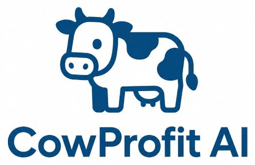

Mastite clínica
Pode causar grumos ou alterações no leite, além de mudanças no úbere, como inchaço e sensibilidade.
Observe o leite e o úbere em cada ordenha.

Meu checklist ↗A mastite nem sempre aparece. A prevenção precisa aparecer todos os dias. Cuide do seu rebanho com informação e uma rotina mais consciente.
A mastite é uma inflamação da glândula mamária, frequentemente associada a infecções bacterianas. Ela pode afetar o bem-estar da vaca, a produção e a qualidade do leite.
Pode causar grumos ou alterações no leite, além de mudanças no úbere, como inchaço e sensibilidade.
Pode estar presente mesmo quando o leite parece normal. A aparência sozinha não garante a saúde da glândula mamária.
Informação para o manejo: sinais suspeitos precisam de avaliação veterinária. Saiba mais na Embrapa ↗
A prevenção combina higiene, ambiente adequado e acompanhamento do rebanho.
Mantenha os locais limpos e secos. Higienize mãos e equipamentos. Use pré-dipping conforme o fabricante e seque os tetos com papel descartável individual.
Examine o úbere, faça o teste da caneca e organize a linha de ordenha. Animais doentes ou em tratamento ficam por último, com separação do leite.
Aplique pós-dipping, ofereça alimento e registre os casos. CMT, CCS e manutenção dos equipamentos fazem parte do acompanhamento.
Estamos desenvolvendo uma proposta de apoio à detecção precoce da mastite subclínica, pensada para a realidade de pequenos e médios produtores e conectada a cooperativas e laticínios.
PROJETO EM DESENVOLVIMENTO E VALIDAÇÃOA proposta usa voz e texto pelo WhatsApp para facilitar o registro da rotina do produtor.
Sensores de condutividade do leite e histórico do rebanho apoiariam a identificação de alterações.
Regras clínicas e alertas buscam apoiar o acompanhamento, com confirmação por testes e avaliação veterinária.
Não. A forma subclínica pode não apresentar sinais visíveis. O acompanhamento deve incluir testes e avaliação técnica.
O CMT é um teste prático de triagem que deve ser realizado e interpretado por pessoa treinada. A CCS é uma análise laboratorial da contagem de células somáticas. O veterinário orienta o uso e a interpretação dos resultados.
Identifique o animal, separe o leite suspeito e procure o médico-veterinário responsável. Respeite a carência dos medicamentos e não defina tratamentos por conta própria.
Não. Ele organiza os cuidados preventivos da rotina. Concluir todos os itens não garante ausência de mastite e não substitui o acompanhamento sanitário.